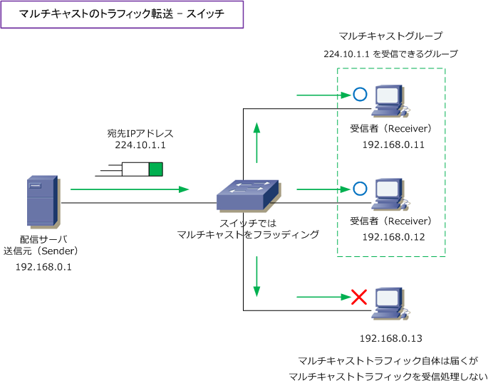
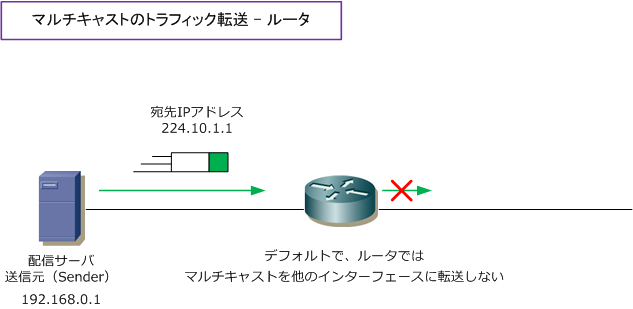
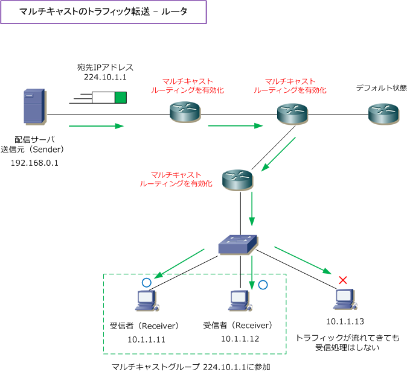

Multicast traffic - Router / Switch
マルチキャストの転送処理（スイッチの場合）
マルチキャストのトラフィックは、ブロードキャストと同様にスイッチではデフォルトでフラッディング されます。そのため、同じセグメント上にマルチキャストのSender（送信元サーバ）とマルチキャストの Receiver（受信クライアント）がいる場合、受信クライアントがマルチキャストグループに参加してから 送信元サーバでマルチキャストトラフィックを送信するだけで、マルチキャストによる通信が成立します。

マルチキャストの転送処理（ルータの場合）
ルータでは、マルチキャストのトラフィックはブロードキャストと同様にデフォルトでは転送されません。 ルータだけでなくL3スイッチなど、Layer3以上の機器ではブロードキャスト同様に処理されてしまいます。

実際の企業ネットワークでは、マルチキャストのトラフィックを送信するSenderと、受信するReceiverは 異なるセグメントに配置されることが多いため、マルチキャストトラフィックを転送させるためにルータで マルチキャストルーティングを有効化する必要があります。
マルチキャストルーティングを有効化する対象のルータは、Senderが配置されているルータだけではなくて Receiverが配置されているルータ、そして経由する全てのルータも対象となります。
